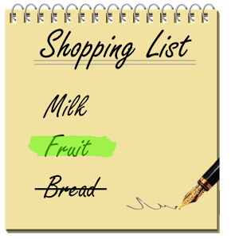

Toggle navigation
SimpleShop
Sign in
Create and share simple shopping lists
Add contents to your list easily from your app. Share it with your family so you can coordinate purchasing more efficiently

Name
Email
Password
Login with Facebook